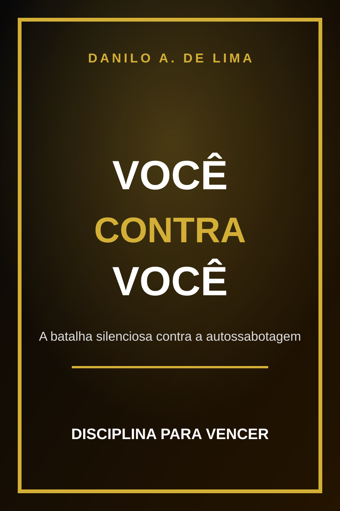

Clareza
Identificar os padrões que travam sua evolução.
LIVRO DIGITAL
Um livro para encarar a autossabotagem de frente e trocar desculpas por atitude.

TEMA CENTRAL
O livro mostra como procrastinação, medo e falta de decisão criam uma prisão invisível. O caminho é responsabilidade, rotina e execução.
PROMESSA EDITORIAL
Identificar os padrões que travam sua evolução.
Encarar a responsabilidade sem romantizar desculpas.
Criar movimento real com pequenas decisões diárias.